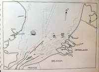
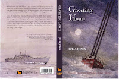

{kind=link}
Chen Min was born in
Fujian Province, China. He was an only child in a rural family. When
he was very small his father left home to work in the city. So many
other men had done the same that Min’s village was nicknamed the
Village of Living Widows. The late twentieth and early twenty-first centuries in China has been a period of huge internal
migration -- the largest in human history -- as people flood from the country into towns to work in
factories. Though the scale is different it’s hard not to be reminded of Britain in the
mid-nineteenth century when internal migrations made this the first country on earth where more people lived in towns than in the country.
Like many c19th British migrants Min’s father suffered from poor working
conditions, overcrowding and lack of healthcare. The traditional Chinese "Hukou" system means that people born in the countryside cannot expect education for their children or social welfare in the cities. They have no rights, they are almost illegal immigrants in their own country. Min's father died in the city,
no-one could quite explain why. His mother went to discover what
had happened but was given no answers. She and Min’s
grandparents carried on living in the village struggling to support
themselves and to find the money to pay for his education. Success in education at university level is the only way to break free of the system but it's a hard, expensive route.
| Night in the Taiwan Strait, for fishermen or smugglers |
{kind=link}
Eventually the family were forced to realise that this couldn’t be done from within the village. Min’s mother
Xiao Ling would need to leave; she would have to find work elsewhere and send the money
home so Min could continue his studying. This was their only
chance of a better life.
They talked about it within the family, and took advice, then decided on a bolder plan. Xiao Ling would not go to work in a Chinese factory as her husband had done: she would go abroad, to a Western country where pay and working conditions were so much better. They would need to borrow the money for her journey but they didn't expect she would need to stay away for so long. The snakehead could organise everything, the paperwork, the travel, the job, the accommodation -- but first they needed a deposit. So the family went to the money-lender. The terms were harsh but everyone assured them that Xiao Ling would soon be sending so much money home that the debt would vanish. It was an investment in their future, a shrewd long-term decision.
They talked about it within the family, and took advice, then decided on a bolder plan. Xiao Ling would not go to work in a Chinese factory as her husband had done: she would go abroad, to a Western country where pay and working conditions were so much better. They would need to borrow the money for her journey but they didn't expect she would need to stay away for so long. The snakehead could organise everything, the paperwork, the travel, the job, the accommodation -- but first they needed a deposit. So the family went to the money-lender. The terms were harsh but everyone assured them that Xiao Ling would soon be sending so much money home that the debt would vanish. It was an investment in their future, a shrewd long-term decision.
Min’s
last sight of his mother was when she boarded a bus one early morning
on the first stage of the long journey that would take her across the
continents by lorry, plane and foot until she reached England, the
country of the gweilao, the ghosts, those pale-skinned people who were so rich
and lived so well that they needed poor workers to do all the jobs
that they were too comfortable to do for themselves.
| Lanterns at Chinese New Year for prosperity and good luck |
{kind=link}
He was seven when
his mother left. It was months before they heard from her but
eventually she phoned them to say that she'd arrived in the country of the ghosts. Somehow it seemed that the money hadn’t been enough. They would need to borrow more. Xiao Ling's wages weren't as high as they'd been told and there were unexpected deductions. It was still a struggle to pay the school fees -- and everything
else went to appease the moneylender, yet still the debt increased.
Years
passed. Communication became increasingly difficult. Min studied
every waking hour to get good marks so that he would eventually be able to take the university entrance exams and repay his mother and grandparents for all the
sacrifices they’d made for him. By the time he was 14, his
grandfather had died, the moneylender was threatening them, Min's grandmother could no longer manage their
little piece of land and most of his friends were leaving school to move to the cities and find factory work.
Chinese New Year is a huge annual migration as the factories close down
and workers from cities go home to their families and enjoy the traditional festivity and show off their mobile phones
and urban clothes and brag about how well they’re doing. Min's cousin, Chen Kai was one of these and a few days before the end to the festival Min’s grandmother packed him some food -- just as
she’d done for his mother -- and he too squeezed onto a crowded bus and left the village where he'd been born. Chen Kai advised him to try for a factory job -- though he admitted privately that conditions were a lot tougher then he'd told his family. Min
was determined to do more. He hadn’t any money. He couldn’t
pay a snakehead, but he was going to reach the country of the ghosts, And then he was going to find his mother.
| The Haicang Bridge in Xiamen. Chen Kai lived on the wrong side |
{kind=link}
Min and his cousin travelled to Xiamen. It’s a major port with connections by sea all over the world. A combination of audacity, willingness
and dollops of luck got Min on board a tanker where he
slaved his passage to Rotterdam. Then he found himself in the middle
of group of paying travellers. They had bought their journey from a snakehead and now they were being pushed and
intimidated into crates and the lids screwed down and loaded onto a
container which was lifted high onto a ship which would make the
brief North Sea crossing to the port of Felixstowe in Suffolk. This was where Min wanted to go. He took his courage in both hands and slipped into the container together with his angry, cheated fellow-countrymen.
But the sea was rough and something wasn’t quite right with the way the container
had been attached. Sometime in the dark wet night it tumbled off the ship and submerged, slowly and invisibly. A dozen people
drowned that night, trapped in their crates. That’s not as many as
the fifty-eight Chinese migrants who suffocated in the back of a lorry at Zeebrugge,
waiting to be smuggled into this country, desperate for a better
life. Or the seventy-one mainly Syrian migrants who suffocated last month in an abandoned lorry in Austria. Or the hundreds (thousands?) whose bodies are washed upon Mediterranean and Aegean shores or who are never seen again.
 |
| Claudia Myatt's North Sea map for Ghosting Home |
{kind=link}
Min’s story is fiction (I told it in Ghosting Home) so he has a happier ending. Everything else is truth. I learned these truths from Ghosts, Nick Broomfield’s film about the twenty-three Morecombe Bay cockle pickers and
their journey from rural China to their deaths on the English sands. I
learned them from Lesley Chang’s book Factory Girls and from the brilliant investigative reporting of journalist Hsiao-Hung
Pai in Chinese Whispers and Scattered Sand. I thought about Min again this week as I looked with the rest of
the country at the drowned body of little Aylan Kurdi and heard about the boat driver (I won't call him a skipper) who abandoned his passengers at the first sign of rough weather and I listened to
the anxious differentiations between “genuine refugees” and “economic migrants”. And I thought, once again, who delivered all these people into the hands of criminals?
